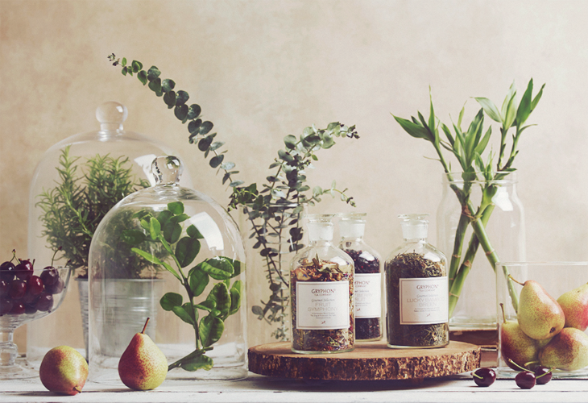
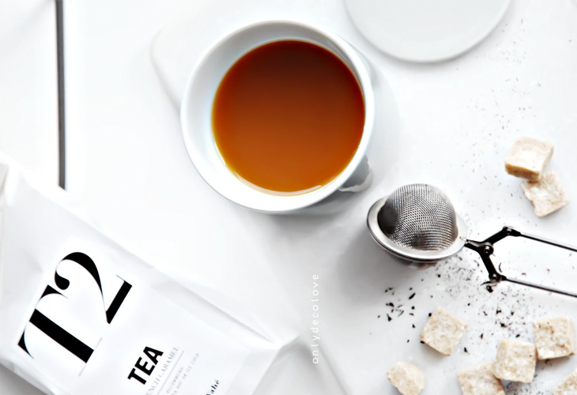
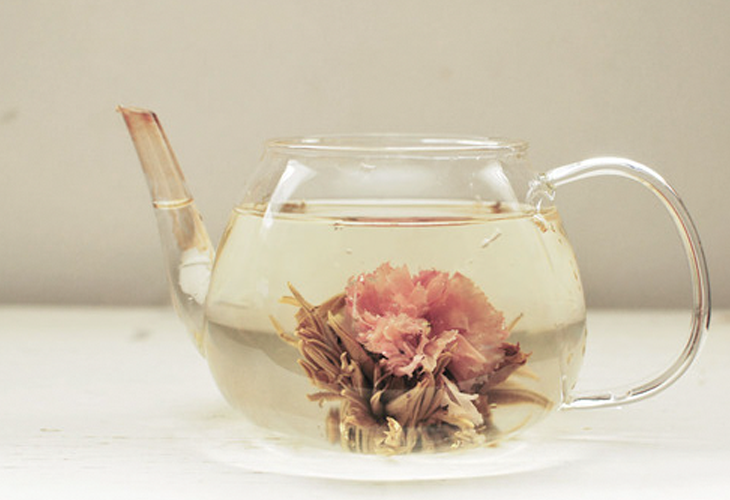
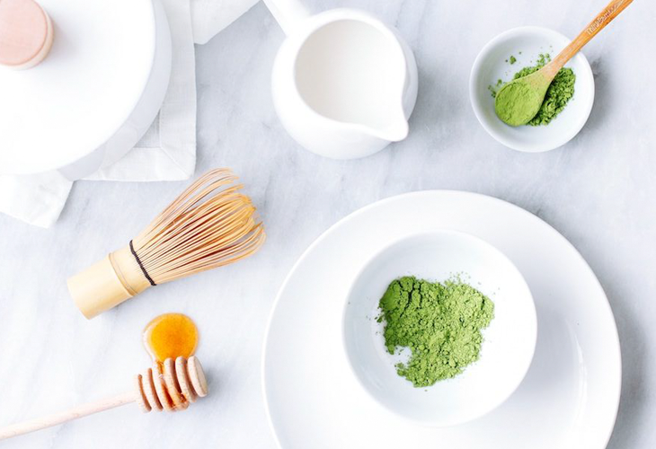
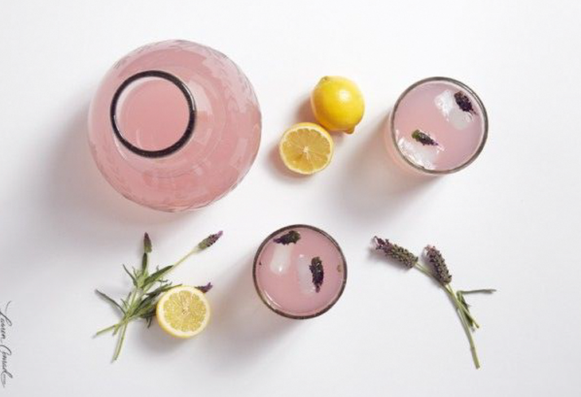

Artisan Selection
The millennia-old story of tea continues to unfold with our award-winning Artisanal Selection. Join our master blender on a distinctly Asian quest to unearth the rarest and finest flavours in the region. With a keen eye for the exotic and experimental, he carefully hand-picks the leaf and herb to create the most sublime and experimental flavours.
Each tea is then wrapped in 20 translucent silken sachets and presented in an exquisite artisanal box. The accolades for this Asian love affair with tea have arrived from around the world, and include the Great Taste Award in the UK and Monde Selection in Belgium.
Visit Tea Store

Gourmet Selection
Teas are as different as the earth, water and leaves from which they are drawn, and this complex organic history is reflected in our Gourmet Selection of meticulously crafted flavours. Whether you are a seasoned professional in the foodservice industry, or just beginning your journey, we have the perfect partner for your meal or your mood, from muscular brews that sharpen the senses, to soothing light restoratives that calm the spirit and mind. This continuously evolving range of bulk teas is available in amounts between 50g and 200g.
Visit Tea Store

Grand Cru Selection
A land speaks through the sounds of its people, its soaring mountains or mighty rivers, and yet there is another voice, more subtle and revealing, in which a place quietly confesses to you the character of its earth and rain. With the teas in the Grand Cru Selection we have distilled this voice into its purest form, using only the leaf from select plantations in India, Sri Lanka, China and Japan.
These terroir teas, much like fine wine, communicate the essence of their native soil through unique tenors of taste. Cultivated especially for the connoisseur, they are carefully tended and protected to ensure their flavour – their story – resonates as powerfully in your hand as it did in the field where it was grown.
Visit Tea Store

Flowering Teas
An increasingly popular indulgence, a flowering tea is a skilful weaving together of leaves and flowers using cotton thread. The result is a delightful ambrosia with a powerful visual encore, as the hand-made bundles unfurl during the brewing process. For a second encore, later let them dry and watch as they transform into intricate displays.
Visit Tea Store

Tea Lattes
With the arrival of the lattes, we embark on an exciting new chapter in the development of tea, each page coming alive with varieties of flavour, from the noble Earl Grey and tempting honey and ginger, to the nourishing matchas. The matchas have emerged as a superfood, bursting with antioxidants and providing a more consistent caffeine high than coffee.
The versatility of the tea lattes is an opportunity for tea obsessives like us to unleash our creativity, mixing unconventional flavours to produce new combinations that pop with originality.
Visit Tea Store

Iced Teas
With the arrival of the lattes, we embark on an exciting new chapter in the development of tea, each page coming alive with varieties of flavour, from the noble Earl Grey and tempting honey and ginger, to the nourishing matchas. The matchas have emerged as a superfood, bursting with antioxidants and providing a more consistent caffeine high than coffee.
The versatility of the tea lattes is an opportunity for tea obsessives like us to unleash our creativity, mixing unconventional flavours to produce new combinations that pop with originality.
Visit Tea Store